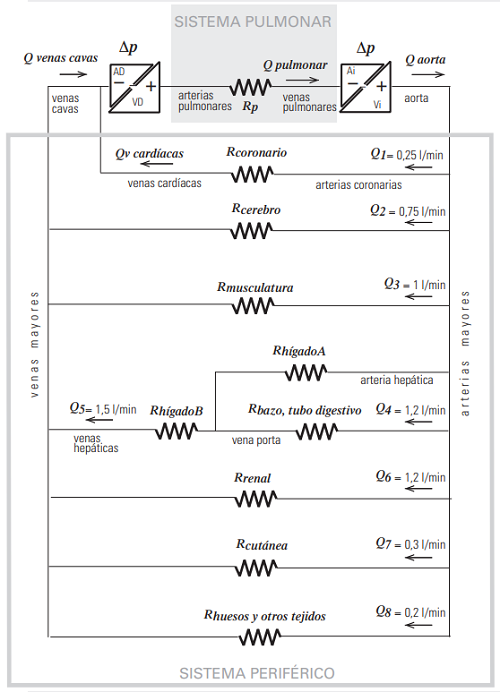

<html>
<head>
<title>MECANICA DE FLUIDOS, G20_47-1, fisica online, ejercicios resueltos</title>
<meta http-equiv="Content-Type" content="text/html; charset=UTF-8" />
<meta name="keywords" content="problemas resueltos, ejercicios resueltos, cbc, fisica, biofisica, fluidos, liquidos, gases, bernoulli, poiseuille, viscosidad, ideales, viscosos, humedad, difusion, osmosis, nomesalen, no me salen, ricardo cabrera" />
<meta name="description" content="Ejercicios y problemas resueltos, y apuntes teóricos de Fluidos, mecanismos de transporte de fluidos" />
<link rel="stylesheet" href="win_ie.css">
<style type="text/css">
<!--
.style1 {
	color: #3F6386;
	font-weight: bold;
}
.Estilo3 {color: #3F6386}
.Estilo16 {font-size: 16px}
.Estilo17 {font-size: 10px}
.Estilo18 {color: #FF0000}
-->
</style>
</head>

<body bgcolor="#FFFFFF" text="#000000" alink="#000000" leftmargin="0" topmargin="0" marginwidth="0" marginheight="0">
<table align=center width="600" border="0" cellspacing="0" cellpadding="0"> 
  <tr bgcolor="#000000" align="right"> 
<td></td></tr> <tr bgcolor="#BB0000" valign="middle" align="left"> 
<td class="bodytext" height="20"><TABLE WIDTH="100%" BORDER="0" CELLSPACING="0" CELLPADDING="0">
  <TR ALIGN="center" CLASS="menuitem">
    <TD WIDTH="43" height="19" CLASS="menuitem"><A HREF="../../index.html" CLASS="menuitem">&nbsp;<B>home</B>&nbsp;</A></TD>
    <TD WIDTH="5" CLASS="menuitem"><FONT COLOR="#000000">|</FONT></TD>
    <TD width="119" CLASS="menuitem"><strong><a href="index_hdinam.html" class="menuitem">más de hidrodinámica </a> </strong></TD>
    <TD width="9" CLASS="menuitem"><FONT COLOR="#000000">|</FONT></TD>
    <TD width="127" CLASS="menuitem"><strong><a href="../../intro_NMS.html" class="menuitem">otros temas de F&iacute;sica</a></strong></TD>
    <TD width="10" CLASS="menuitem"><FONT COLOR="#000000">|</FONT></TD>
    <TD width="160" CLASS="menuitem"><strong><a href="../../lista_ciruela.html" class="menuitem">lecciones del maestro Ciruela </a></strong></TD>
    <TD width="8" CLASS="menuitem"><FONT COLOR="#000000">|</FONT></TD>
    <TD width="67" CLASS="menuitem"><strong><a href="../../lista_tonterias.html" class="menuitem">tonter&iacute;as</a></strong></TD>
    <TD WIDTH="7" CLASS="menuitem"><a href="../energia/index_energia.html" class="menuitem"></a><FONT COLOR="#000000">|</FONT></TD>
    <TD WIDTH="48" CLASS="menuitem">&nbsp;<B><FONT FACE="Arial, Helvetica, sans-serif"><A HREF="mailto: ricuti@gmail.com" CLASS="menuitem">@</A></FONT><A HREF="../../index.html" CLASS="menuitem"></A></B>&nbsp;</TD>
  </TR>
</TABLE></td></tr> <tr> <td class="bodytext" height="19"><p></td></tr> 
<tr align="center"> <td height="4805"> <table width="600" border="0" cellspacing="0" cellpadding="0"> 
<tr class="bodytext"> <td colspan="2" valign="top" height="4900"> <p></td>
<td valign="top" width="594" height="4900"> 
<table width="589" border="0" cellspacing="0" cellpadding="0"> <tr> 
  <td height="74" colspan="2" bgcolor="#D7FFFF" class="bodytext"><span class="bodytext"><strong><em><strong><em><strong><strong>&#160; &#160;</strong></strong></em></strong></em>NO ME SALEN<br />
</strong></span><span class="Estilo3"><em class="bodytext "><strong><em><strong><em><strong><strong>&#160; &#160;</strong></strong></em></strong></em>(<strong>PROBLEMAS RESUELTOS   DE BIOF&Iacute;SICA DEL CBC</strong>)</strong></em></span><br />
      <span class="titulograndegris Estilo16"><strong><em><strong><em><strong><strong>&#160; &#160;</strong></strong></em></strong></em>FLUIDOS<br />
      </strong></span><br /> </td>
  <td class="bodytext" rowspan="4" height="74" width="7">&nbsp;</td>
  <td class="bodytext" height="74" rowspan="4" valign="top" width="85"> 
<p></p></td></tr>
  <tr>
    <td height="18" colspan="2" bgcolor="#FFFFFF" class="bodytext">&nbsp;</td>
  </tr> 
<tr> <td width="150" height="434" valign="top" class="bodytext"><p></P>
    </td>
  <td width="357" valign="top" class="bodytext"><p><strong>47 - Sistema circulatorio sanguíneo<br>
    El sistema cardiovascular humano consta de dos bombas fusionadas en un solo corazón que  impulsan la sangre por un circuito cerrado compuesto de dos sistemas:  <br>
    SISTEMA GRANDE O PERIFÉRICO. El ventrículo del corazón izquierdo (VI) expulsa la sangre oxigenada por la arteria aorta y se reparte a todos los órganos y tejidos del cuerpo a través del sistema de  arterias mayores. En los lechos capilares de cada órgano la sangre intercambia nutrientes y desechos y  regresa por el sistema de retorno de venas mayores drenando en la aurícula del corazón derecho (AD).  <br>
    SISTEMA CHICO O PULMONAR. La sangre luego pasa de la aurícula derecha al ventrículo derecho  (VD) que la impulsa hasta los pulmones por la arteria pulmonar. En los lechos vasculares pulmonares se oxigena y retorna al corazón izquierdo por las venas pulmonares que drenan en la aurícula  izquierda (AI). De ahí pasa al ventrículo izquierdo completando el ciclo.  Se adjunta un esquema simplificado del circuito donde la parte resistiva corresponde a los lechos  vasculares: arteriolas, capilares y vénulas en los diferentes órganos. Las presiones manométricas son:<br>
    &nbsp;&nbsp;&nbsp;
    <em>p aorta = 94 mmHg <br>
&nbsp;&nbsp;&nbsp;
p vena cava = 3 mmHg  <br>
&nbsp;&nbsp;&nbsp;
p arteria pulmonar = 15 mmHg  <br>
&nbsp;&nbsp;&nbsp;
p venas pulmonares = 5 mmHg<br>
    <br />
    </em></strong></p>    </td>
</tr>
<tr>
  <td height="94" colspan="2" align="center" valign="middle" class="bodytext"></td>
  </tr>
<tr>
  <td height="218" colspan="2" class="bodytext"><p><strong>a) A partir de los datos del cuadro  del <a href="G20_Fludin_r_44.html" target="_blank">problema 44</a> justifique que en este  modelo del esquema adjunto se considere despreciable la resistencia en las  grandes arteria y venas.</strong> (Hay más preguntas que se transcriben abajo). Tal como se ve en el cuadro de caídas de presión en el ej. 44, en los vasos mayores la caída no alcanza a los <em><strong>1,5<span class="epigrafe"> mmHg</span></strong></em>. Comparado con la caída total, <em><strong>90<span class="epigrafe"> mmHg</span></strong></em> (según el presente esquema) eso representa menos del <em><strong>1,5 %</strong></em>. Hay mucho de lo que podemos aprender del sistema vascular despreciando el circuito chico.</p>
    <p><strong>b) Compare la magnitud del caudal  en la arteria pulmonar con el caudal en  la aorta. ¿Cómo están dispuestos el sistema pulmonar y el sistema periférico?  Haga un esquema del circuito sanguíneo con los siguientes elementos: corazón derecho, corazón izquierdo, resistencia pulmonar y resistencia periférica.</strong> El caudal en la aorta y en la vena cava es el mismo. No puede ser de otra manera, ya que el sistema vascular es un circuito cerrado. Acá tenés el esquema.</p></td>
  <td width="7" class="bodytext">&nbsp;</td>
  <td width="85" align="center" valign="middle" class="epigrafe Estilo18">&nbsp;</td>
</tr>  

<tr>
  <td height="260" colspan="2" align="center" valign="middle" class="bodytext"></td>
  <td class="bodytext">&nbsp;</td>
  <td class="bodytext">&nbsp;</td>
</tr>
<tr>
  <td height="1684" colspan="2" align="left" valign="middle" class="bodytext"><p>Existe una pequeña diferencia entre el caudal en la aorta y el caudal en las venas cavas. Se trata de el pequeño caudal que secuestran de la aorta las arterias coronarias, que asisten al propio músculo cardíaco, y que  las venas cardíacas   la descargan en una gran vena localizada en la parte posterior del corazón, denominada seno coronario, que devuelve la sangre a la aurícula derecha.</p>
    <p><strong>c) Relacione el caudal en la aorta con  los caudales en las dos venas cavas y  las venas cardíacas. ¿Cómo están dispuestos, en general, los lechos vasculares de los distintos órganos y subsistemas en el sistema periférico? Calcule el  caudal en la aorta.</strong> Vamos con los caudales.</p>
    <blockquote>
      <p><em><strong>Q<sub>aorta</sub> = </strong></em><strong></strong><em><strong>Q<sub>venas cava</sub> + </strong></em><em><strong>Q<sub>venas cardíacas</sub></strong></em></p>
      <p><em><strong>Q<sub>aorta</sub> = 4,95 <span class="epigrafe">L/min</span> + 0,25 <span class="epigrafe">L/min</span></strong></em></p>
      <p><em><strong>Q<sub>aorta</sub> = </strong></em><em><strong>5,25 <span class="epigrafe">L/min</span></strong></em></p>
      </blockquote>
    <p>El caudal de las venas cavas lo obtuve sumando los caudales de todas (menos las coronarias) las ramificaciones vasculares según el gráfico adjunto.</p>
    <p>El sistema cardiovascular esta montado casi en su totalidad en paralelo. Son apenas dos los lugares en los que aparecen resistencias en serie.</p>
    <p><strong>d) Sin hacer cálculos, ordene de  mayor a menor las resistencias encefálica, coronaria, renal, cutánea y la resistencia total del sistema periférico.</strong> Como todas las resistencias están montadas en paralelo, todas están sometidas a la misma diferencia de presión (unos <em><strong>90 <span class="epigrafe">mmHg</span></strong></em>). Poor lo tanto a mayor caudal, menor resistencia. Luego:</p>
    <blockquote>
      <p><em><strong>R<sub>coronaria</sub> > R<sub>cutánea</sub> > R<sub>encefálca</sub> > R<sub>renal</sub>  > R<sub>perisférica</sub></strong></em><strong></strong></p>
      </blockquote>
    <p><strong>e) Calcule la resistencia del circuito pulmonar y la del circuito periférico expresada en <em>mmHg.s/ml</em>, unidad denominada  <em>URP</em>, usada habitualmente para medir  resistencias vasculares. Expréselas  también en <em>Pa.s/m<sup>3</sup></em></strong>. Podemos conocer esas resistencias obteniéndolas a partir de la ley de Ohm. Teniendo en cuenta los valores que aporta el enunciado (arriba de todo):</p>
    <blockquote>
      <p><strong>&nbsp;&nbsp;&nbsp; <em>p aorta = 94 mmHg <br>
        &nbsp;&nbsp;&nbsp;
        p vena cava = 3 mmHg <br>
        &nbsp;&nbsp;&nbsp;
        p arteria pulmonar = 15 mmHg <br>
        &nbsp;&nbsp;&nbsp;
        p venas pulmonares = 5 mmHg</em></strong></p>
      <p><strong><em><strong><em>&#916;P</em></strong></em></strong><em><strong><sub>circuito pulmonar</sub></strong></em> <strong>=</strong> <strong><em>p<sub>arteria pulmonar</sub><strong> &mdash;</strong> p<sub>venas pulmonares</sub></em></strong>      </p>
      <p><strong><em><strong><em>&#916;P</em></strong></em></strong><em><strong><sub>circuito pulmonar</sub></strong></em> <strong>=<em> 15 <span class="epigrafe">mmHg</span><strong> &mdash;</strong> 5 <span class="epigrafe">mmHg</span></em></strong> <strong>=</strong> <strong><em>10 <span class="epigrafe">mmHg</span></em></strong></p>
      <p><strong><em>R<strong><sub>circuito pulmonar</sub></strong> = <strong><em>&#916;P<strong><sub>circuito pulmonar</sub></strong></em></strong> / Q</em></strong></p>
      <p><strong><em>R<strong><sub>circuito pulmonar</sub></strong> = 10 <span class="epigrafe">mmHg</span> / <strong>5200 <span class="epigrafe">ml/60s</span></strong></em></strong> <strong>=</strong> <em><strong>0,115 URP</strong></em></p>
      </blockquote>
    <p>Vamos con el circuito periférico.</p>
    <blockquote>
      <p><strong><em><strong><em>&#916;P</em></strong></em></strong><em><strong><sub>circuito periférico</sub></strong></em> <strong>=</strong> <strong><em>p<sub>aorta </sub><strong>&mdash;</strong> p<sub>venas cavas</sub></em></strong></p>
      <p><strong><em><strong><em>&#916;P</em></strong></em></strong><em><strong><sub>circuito periférico</sub></strong></em> <strong>=<em> 94 <span class="epigrafe">mmHg</span><strong> &mdash;</strong> 3 <span class="epigrafe">mmHg</span></em></strong> <strong>=</strong> <strong><em>91 <span class="epigrafe">mmHg</span></em></strong></p>
      <p><strong><em>R<strong><sub>circuito  periférico</sub></strong> = 91 <span class="epigrafe">mmHg</span> / <strong>5200 <span class="epigrafe">ml/60s</span></strong></em></strong> <strong>=</strong> <em><strong>1,05 URP</strong></em></p>
    </blockquote>
    <p>Haciendo la conversión de unidades llegás a que: </p>
    <blockquote>
      <p><em><strong>1</strong></em> <em><strong>URP = 1</strong></em> <em><strong><em class="epigrafe">mmHg.s/ml</em> = </strong></em><em><strong>1,33 <span class="Estilo17">10</span><sup>5</sup> <span class="epigrafe">Pa.s/m</span><em><sup>3</sup></em></strong></em></p>
      </blockquote>
    <p>Por lo tanto:</p>
    <blockquote>
      <p><strong><em>R<strong><sub>circuito pulmonar</sub></strong> = </em></strong><em><strong>0,153 <span class="Estilo17">10</span><sup>5</sup> <span class="epigrafe">Pa.s/m</span><em><sup>3</sup></em></strong></em></p>
      <p><strong><em>R<strong><sub>circuito  periférico</sub></strong> = </em></strong><em><strong>1,4 <span class="Estilo17">10</span><sup>5</sup> <span class="epigrafe">Pa.s/m</span><em><sup>3</sup></em></strong></em></p>
    </blockquote>
    <p><strong>f) La sigla URP viene de Unidad de  Resistencia Periférica, esta denominación se utiliza porque el valor de la resistencia total del sistema  circulatorio periférico es aproximadamente 1 URP. Calcule la resistencia de la circulación renal expresada en URP. Compárela con la resistencia total, ¿tiene sentido que sea mayor?</strong> Nuevamente recurrimos al esquema del enunciado y vemos que el caudal que pasa por los riñones vale: </p>
    <blockquote>
      <p><em><strong>Q<sub>renal</sub> = </strong></em><em><strong>1,2 <span class="epigrafe">L/min</span></strong></em> <em><strong>=</strong></em> <em><strong>20 <span class="epigrafe">ml/s</span></strong></em></p>
    </blockquote>
    <p>Y la diferencia de presión a la que están sometidos no es otra que la del sistema periférico: </p>
    <blockquote>
      <p><strong><em><strong><em>&#916;P</em></strong></em></strong><em><strong><sub>circuito periférico</sub></strong></em> <strong>=<em> 91 <span class="epigrafe">mmHg</span></em></strong></p>
      </blockquote>
    <p>Luego (ley de Ohm):</p>
    <blockquote>
      <p><em><strong>R<sub>renal</sub></strong></em> <strong><span class="bodytext">= </span><em><strong><em>&#916;P</em></strong></em></strong><em><strong><sub>circuito periférico</sub></strong></em> <em><strong>/ </strong></em><strong></strong><em><strong>Q<sub>renal</sub></strong></em></p>
      <p><em><strong>R<sub>renal</sub></strong></em> <strong>= <em>91 <span class="epigrafe">mmHg</span></em></strong><em><strong> / 20 <span class="epigrafe">ml/s</span> = 4,55 </strong></em><strong><em><span class="epigrafe">mmHg</span></em></strong>.<span class="epigrafe"><em><strong>s/ml</strong></em><strong></strong></span> <em><strong>= 4,55 </strong></em><strong><em><span class="epigrafe">URP</span></em></strong><span class="epigrafe"><em><strong></strong></em><strong></strong></span></p>
      </blockquote>
    <p>Es lógico, siempre es así, que la resistencia de cada elemento de una asociación en paralelo sea mayor que la resistencia equivalente de todo el montaje en paralelo.</p>
    <p><strong>g) SISTEMA PORTAL HEPÁTICO. El hígado B recibe, a través de la vena porta, la sangre con nutrientes proveniente del páncreas, el bazo, el estómago, el intestino y la vesícula biliar. También recibe  aportes directos de parte de vasos del mismo hígado (hígado A) alimentados con sangre oxigenada  por la arteria hepática. En último término, toda la sangre abandona el hígado a través de las venas  hepáticas, que drenan en la vena cava inferior que desemboca en el corazón. La asociación de las  resistencias de los lechos vasculares del bazo y del tubo digestivo (<em>R<sub>btd</sub></em> ) es de <em>4 <span class="epigrafe">URP</span></em>. </strong></p>
    <p><strong>g.1) Calcule la resistencia <em>R<sub>hígado A</sub></em> . </strong><strong>g.2) Calcule la resistencia del sistema constituido por <em>R<sub>hígado A</sub></em> , <em>R<sub>hígado B</sub></em> y <em>R<sub>btd</sub></em> , y la resistencia <em>R<sub>hígado B</sub></em>.</strong> Vamos a trabajar con solo una porción del esquema del enunciado. La parte que nos interesa:</p></td>
  <td class="bodytext">&nbsp;</td>
  <td class="bodytext">&nbsp;</td>
</tr>
<tr>
  <td height="214" colspan="2" align="center" valign="middle" class="bodytext"></td>
  <td height="214" align="left" valign="middle" class="bodytext">&nbsp;</td>
  <td height="214" align="center" valign="middle" class="epigrafe Estilo18">&nbsp;</td>
  </tr>

<tr>
  <td height="776" colspan="2" align="left" valign="middle" class="bodytext"><p>Es el esquema de la izquierda. La resistencia del hígado A, <strong><em>R<sub>HA</sub></em></strong>, esta en paralelo con la resistencia del bazo y tubo digestivo, <strong><em>R<sub>btd</sub></em></strong>. Ese conjunto, a su vez, está en serie con la resistencia del hígado B, <strong><em>R<sub>HB</sub></em></strong>. El conjunto total (la serie) se halla sometida a la diferencia de presión que imprime el corazón, los <strong><em>91 <span class="epigrafe">mmHg</span></em></strong> que ya calculamos antes.</p>
    <p>El esquema del enunciado también aporta los caudales y atraviesan esas resistencias: <strong><em>Q<sub>HB</sub></em></strong> <strong>=</strong> <em><strong>25 <span class="epigrafe">ml/s</span></strong></em>, <strong><em>Q<sub>btd</sub></em></strong> <strong>=</strong> <em><strong>20 <span class="epigrafe">ml/s</span></strong></em> y, por diferencia, <strong><em>Q<sub>HA</sub></em></strong> <strong>=</strong> <em><strong>5 <span class="epigrafe">ml/s</span></strong></em>. Además se aporta el dato de que <strong><em>R<sub>btd</sub></em></strong> <em><strong>= 4 <span class="epigrafe">URP</span></strong></em>.</p>
    <p>En esa resistencia tenemos su valor y el vaalor de su caudal, podemos entonces (ley de Ohm) calcular la diferencia de presión a que está sometida: </p>
    <blockquote>
      <p><strong><em><strong><em>&#916;P</em></strong><sub>btd</sub></em></strong> <strong>= </strong><strong><em>R<sub>btd</sub></em></strong> . <strong><em>Q<sub>btd</sub></em></strong></p>
      <p><strong><em><strong><em>&#916;P</em></strong><sub>btd</sub></em></strong> <strong>= </strong><em><strong>4 <em class="epigrafe">mmHg.s/ml</em> </strong></em>.<em><strong> 20 <span class="epigrafe">ml/s</span></strong></em> <strong>=</strong> <em><strong>80 <em class="epigrafe">mmHg</em></strong></em></p>
      </blockquote>
    <p>Esta diferencia de presión es la misma a la que está sometido el hígado A, ya que se encuentran en paralelo. <strong><em><strong><em>&#916;P</em></strong><sub>btd</sub></em></strong> <strong>=</strong> <strong><em><strong><em>&#916;P</em></strong><sub>HA</sub></em></strong>. Podemos, entonces (ley de Ohm) conocer su resistencia:</p>
    <blockquote>
      <p><strong><em>R<sub>HA</sub></em></strong> <strong>=</strong> <strong><em><strong><em>&#916;P</em></strong><sub>HA</sub></em></strong> <em><strong>/</strong></em> <strong><em>Q<sub>HA</sub></em></strong></p>
      <p><strong><em>R<sub>HA</sub></em></strong> <strong>=</strong> <em><strong>80 <em class="epigrafe">mmHg</em> / </strong></em><em><strong>5 <span class="epigrafe">ml/s</span></strong></em> <strong>=</strong> <em><strong>16 </strong></em><strong></strong><em><strong><em class="epigrafe">mmHg.s/ml</em></strong></em> <strong>=</strong> <em><strong>16</strong></em> <span class="epigrafe"><em><strong>URP</strong></em><strong></strong></span></p>
      </blockquote>
    <p>La resistencia del paralelo entre (<em><strong>16</strong></em> <span class="epigrafe"><em><strong>URP</strong></em></span> y <em><strong>4</strong></em> <span class="epigrafe"><em><strong>URP</strong></em></span>) valdrá:  </p>
    <blockquote>
      <p><em><strong><em>R<sub>HAbtd</sub></em> = 3,2</strong></em> <span class="epigrafe"><em><strong>URP</strong></em></span></p>
    </blockquote>
    <p>La suma de las caídas de presión a lo largo de una serie es igual a la subida de presión que genera el corazón. De modo que:</p>
    <blockquote>
      <p><strong><em><strong><em>&#916;P</em></strong><sub>HB</sub></em></strong> <strong>=</strong><em><strong> 91 <em class="epigrafe">mmHg</em> </strong></em><strong><em><strong>&mdash;</strong></em> </strong><em><strong>80 <em class="epigrafe">mmHg</em></strong></em> <strong>= </strong><em><strong>11 <em class="epigrafe">mmHg</em></strong></em></p>
      </blockquote>
    <p>Y ahora que conocemos el caudal y la diferencia de presión podemos calcular el valor de su resistencia.</p>
    <blockquote>
      <p><strong><em>R<sub>HB</sub></em></strong> <strong>=</strong> <strong><em><strong><em>&#916;P</em></strong><sub>HB</sub></em></strong> <em><strong>/</strong></em> <strong><em>Q<sub>HB</sub></em></strong></p>
      <p><strong><em>R<sub>HB</sub></em></strong> <strong>=</strong><em><strong> 11 <em class="epigrafe">mmHg</em> </strong></em><em><strong>/ </strong></em><em><strong>25 <span class="epigrafe">ml/s</span></strong></em> <strong>=<em> 0,44 </em></strong><em><strong> </strong></em><strong></strong><em><strong><em class="epigrafe">mmHg.s/ml</em></strong></em> <strong>=</strong> <em><strong>0,44</strong></em> <span class="epigrafe"><em><strong>URP</strong></em></span></p>
    </blockquote>
    <p>La resistencia total de una serie es la suma directa de sus componentes, o sea:</p>
    <blockquote>
      <p><strong><em>R<sub>tot</sub></em></strong> <strong>=</strong><em><strong> </strong></em><strong><em>R<sub>HB</sub></em></strong> + <strong><em>R<sub>HAbtd</sub></em></strong></p>
      <p><strong><em>R<sub>tot</sub></em></strong> <strong>=</strong><em><strong> </strong></em> <em><strong>0,44</strong></em> <span class="epigrafe"><em><strong>URP</strong></em></span><em><strong> </strong></em>+<em><strong> 3,2</strong></em> <span class="epigrafe"><em><strong>URP</strong></em></span><em><strong> = </strong></em><em><strong>3,64</strong></em> <span class="epigrafe"><em><strong>URP</strong></em></span></p>
      </blockquote>
    <p>Acá te repito nuestro esquema con los valores que fuimos encontrando para que puedas hacer fácilmente tus verificaciones.</p></td>
  <td class="bodytext">&nbsp;</td>
  <td class="bodytext"><p></td>
</tr>

<tr>
  <td height="216" colspan="2" align="center" valign="middle" class="bodytext"></td>
  <td class="bodytext">&nbsp;</td>
  <td class="bodytext">&nbsp;</td>
  </tr>

<tr>
  <td height="52" colspan="2" align="left" valign="middle" class="bodytext"><p><strong>h) Considere una frecuencia cardíaca de 80 latidos por minuto, calcule el volumen de sangre que  se expulsa en cada sístole (denominado volumen sistólico, VS). </strong>Ah, qué sencillo, basta con dividir el caudal por minuto en 80 partes.</p>
    <blockquote>
      <p><strong><em>VS = 5,2 <span class="epigrafe">L/min</span> / 80 <span class="epigrafe">latidos/min</span> = </em></strong><strong><em>0,065 <span class="epigrafe">L</span></em></strong> <strong><em>= </em></strong><strong><em>65 <span class="epigrafe">ml</span></em></strong></p>
    </blockquote></td>
  <td class="bodytext">&nbsp;</td>
  <td class="bodytext">&nbsp;</td>
</tr>
<tr>
  <td height="25" colspan="2" align="left" valign="middle" class="bodytext">&nbsp;</td>
  <td class="bodytext">&nbsp;</td>
  <td class="bodytext">&nbsp;</td>
</tr>

<tr>
  <td height="49" colspan="2" align="left" class="bodytext"><p><strong>DESAF&Iacute;O</strong>: <em> </em></p>
    <blockquote>&nbsp;    </blockquote>    </td>
  <td class="bodytext">&nbsp;</td>
  <td width="85" rowspan="3" valign="bottom" class="bodytext"><strong><em><sub><p></sub></em></strong></td>
</tr>

<tr>
  <td height="18" colspan="2" bgcolor="#FFFFFF" class="bodytext">&nbsp;</td>
  <td class="bodytext">&nbsp;</td>
  </tr>

<tr> <td height="64" colspan="2" align="center" valign="middle" bgcolor="#CCCCCC" class="bodytext"><table width="400" height="31" border="0" cellpadding="0" cellspacing="0">
  <tr>
    <td class="epigrafe">Algunos derechos reservados. 
  Se permite su reproducci&oacute;n citando la fuente. &Uacute;ltima actualizaci&oacute;n jul-22. Buenos Aires, Argentina. </td>
  </tr>
</table>  </td>
  <td class="bodytext" width="7">&nbsp;</td>
  </tr> 
<tr> <td height="18" colspan="2" class="bodytext">&nbsp;</td><td class="bodytext" width="7">&nbsp;</td>
<td class="bodytext" width="85">&nbsp;</td>
</tr> 
</table></td></tr> </table><p></td></tr> 
<tr> <td class="bodytext"><p></td></tr> 
</table>
</body>
</html>
